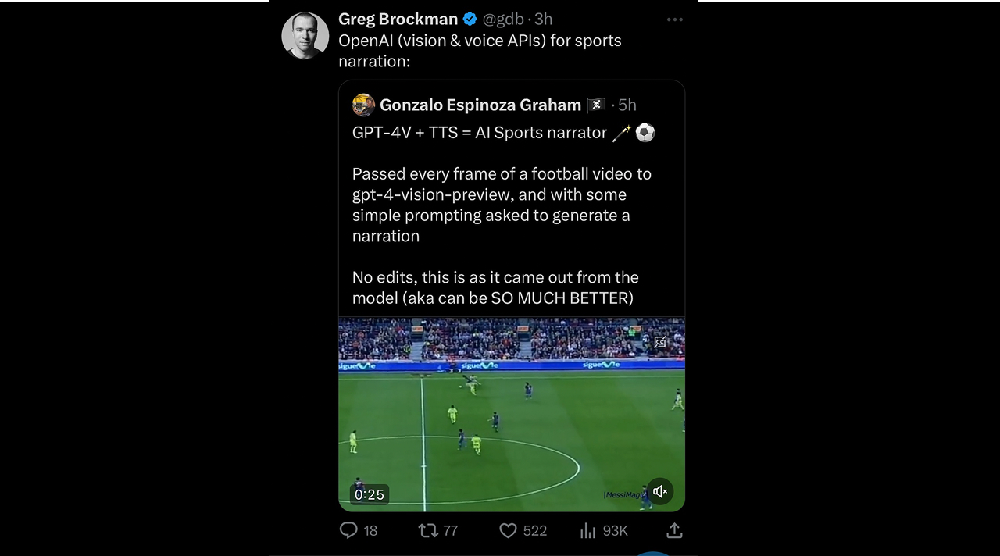

LLM Experiments (2023-2024)
In late 2023 I put together a small public repo of scripts playing with OpenAI’s APIs when streaming for text and audio was still poorly documented. The code lives at github.com/ggoonnzzaallo/llm_experiments: three demos covering TTS streaming, vision-plus-narration on video, and chaining streamed chat output into streamed speech.
button.py: A minimal UI with a text box and a button. Whatever you type is sent to OpenAI’s text-to-speech endpoint. You can toggle streamed playback (audio starts before the full clip is generated) versus waiting for a complete file. I wrote it mainly to quantify how much latency streaming saves; the docs mentioned streaming but did not ship a working example, so this was my reference implementation.
OpenAI TTS + Real Time Streaming = Audio in 0.6secs 🪄🔊
— Gonzalo (@geepytee) November 12, 2023
Instead of waiting for the voice MP3s to generate, I tried the new real time streaming feature
1.5 second of waiting for first audio, down to 0.6 seconds 👀 Excuse my heavy breathing, got excited
Data in thread! pic.twitter.com/Zz55GhaADG
narrator.ipynb: A notebook that takes an MP4 from disk and asks an OpenAI vision model to narrate what it sees, frame by frame. With a tuned system prompt it behaves like a rough sports-style commentator; the demo below is straight model output with no manual edits. Greg Brockman, OpenAI co-founder, retweeted it.
GPT-4V + TTS = AI Sports narrator 🪄⚽️
— Gonzalo (@geepytee) November 7, 2023
Passed every frame of a football video to gpt-4-vision-preview, and with some simple prompting asked to generate a narration
No edits, this is as it came out from the model (aka can be SO MUCH BETTER) pic.twitter.com/KfC2pGt02X
streamed_text_plus_streamed_audio.py: End-to-end low-latency speech from chat. The reply from GPT-3.5-Turbo is streamed live; I chunk the partial text on sentence boundaries and pipe each chunk to TTS, which is also streamed back so playback starts before the full utterance exists. That keeps time-to-first-audio roughly around a second even when the reply is long.
Kept tinkering with OpenAI's TTS and ways to reduce first-audio latency:
— Gonzalo (@geepytee) November 21, 2023
GPT-3.5-Turbo responses streamed back
+
Chunk streamed responses into sentences and send to TTS
+
TTS streaming to play before file is fully gen
=
Consistent first audio in ~1sec regardless of length of msg https://t.co/fjLu7ENJct pic.twitter.com/IZDORRocvi